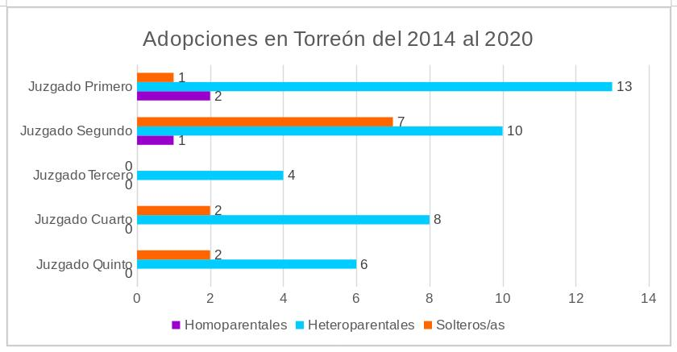

Datos del 2015 del CAAS, registran una media de 22 menores viviendo en casas hogares, en Coahuila, señalando 37 alojamientos, albergando a 824 menores. Para Torreón, se identificaron 13 casas hogares, con 367 menores, acercándose más a la media nacional, con 28 personas por alojamiento.
Satisfaciendo las necesidades de la niña, niño o adolescente, la adopción, como figura jurídica, surge como un instrumento que buscará siempre el “Interés Superior del Menor”, donde pueda hacerse un ejercicio pleno de todos sus derechos.
La Ley de Adopciones y Acogimiento Familiar para el Estado de Coahuila establece:
“[…] hoy se sabe con total evidencia que los procesos de institucionalización prolongados los dañan de forma severa […] La adopción y el acogimiento familiar son formas de restituirles ese derecho a vivir, crecer y desarrollarse dentro de un núcleo familiar”
Sin embargo, la adopción no es una práctica que abunde en el país. Según el Censo de Alojamientos de Asistencia Social (CAAS), con datos al 2015, en el país se registraron 25,667 menores viviendo en 879 casas hogares, dando una media equivalente de 29 personas conviviendo en el mismo alojamiento de asistencia social.
Si bien no todos los y las menores que se encuentran en casas hogares padecen una condición de orfandad, quienes se encuentran en estos lugares, han sufrido separaciones familiares por violencia o negligencia. Los datos del CAAS resultan importantes porque dan una aproximación, y acercan a la realidad de la cantidad de personas a las que de alguna forma se les está privando del derecho de vivir en un núcleo familiar sano.
Ahora, el Instituto Nacional de Estadística y Geografía define una casa hogar para menores, como todo aquel establecimiento de asistencia social que proporcione alojamiento, alimentación y otros servicios a menores. Se resalta que, en estos lugares se les puede cuidar la mayor parte de la semana o de manera continua.
Datos del 2015 del CAAS, registran una media de 22 menores viviendo en casas hogares, en Coahuila, señalando 37 alojamientos, albergando a 824 menores. Para Torreón, se identificaron 13 casas hogares, con 367 menores, acercándose más a la media nacional, con 28 personas por alojamiento. Para el municipio de Matamoros, no se encontraron registros de casas hogares para menores según este mismo censo.
De las y los 367 menores alojados en Torreón, se sabe que, 189 usuarias son mujeres, y 178, hombres. Los datos también indicaron que, 37 menores tenían de 0 a 4 años; 153 personas oscilaban entre los 5 y 9 años; 150 residentes tenían de 10 a 14 años; y, las 27 personas restantes, superaban los 15 años, a los datos del 2015.
También, el CAAS indica que, el 79.0% de las y los menores son nacidos en Coahuila, el 18.8% nacieron en otra entidad federativa, y del resto no se tienen datos.
Igualmente, se sabe que sólo el 88.6% de estas personas acuden activamente a la escuela.
De acuerdo a los datos que se registraron en este censo, en relación a las casas hogares, se sabe que 84.6% de éstas otorgan vestimenta y calzado a sus residentes; el 92.3% cuenta con algún tipo de servicio médico, ya sea dentro o fuera del alojamiento y, el 84.6% reúne las condicionantes necesarias en el lugar para que sus residentes realicen actividades de recreación y/o entretenimiento.
En el tema de asesoramiento por parte de estas casas hogares, se especifica que, el 76.9% da orientación en educación sexual y reproductiva; el 84.6% proporciona apoyo psicológico y, el 53.9% asesora en materia legal y jurídica.
Este último dato resulta especialmente relevante, porque, como se ha mencionado, son diversas las razones por la que una o un menor podría estar viviendo en una casa hogar, y, sin duda, existen casos con posibilidad de adopción, por lo que sería de vital importancia que el o la menor, conozca de lleno el proceso al que podría incursionarse.
Son diversos los institutos que se encargan de las adopciones en el país, mientras que, en CDMX, el órgano encargado es el Sistema Nacional para el Desarrollo Integral de la Familia (SNDIF), cada estado cuenta con un ente similar. Para Coahuila, quien se encarga del proceso es la Procuraduría para Niños, Niñas y la Familia (PRONNIF).
Para que se logre una adopción, en un primer encuentro se deberán de cumplir los requisitos establecidos por la Ley de Adopciones y Acogimiento Familiar para el Estado de Coahuila; enseguida habrá que iniciar un proceso administrativo ante la PRONNIF, presentando la documentación necesaria y cumpliendo con los requerimientos.
El expediente queda en lista de espera, para después pasar a un proceso de asignación de niñas, niños y adolescentes susceptibles de adopción, y, en caso de que las convivencias preadoptivas sean positivas y aprobados por el Consejo Técnico de Adopciones, se inicia el procedimiento judicial de adopción.
En el municipio de Torreón, durante el periodo 2014 - 2020, se registraron 56 adopciones según datos otorgados por el Poder Judicial del Estado de Coahuila, en donde 12 se dieron entre solteros/as, 41 entre parejas heteroparentales y 3 en parejas homoparentales.

Cabe mencionar, que, el 20 de octubre del 2020, la Ley de Adopciones y Acogimiento Familiar para el Estado de Coahuila, sufrió modificaciones, eliminando las pruebas de VIH/SIDA y el certificado médico de infertilidad como requisitos para llevar a cabo una adopción, por lo que se espera en los siguientes años, las adopciones en el estado de Coahuila vayan en aumento.
Coahuila finalizó el 2020 con 72 adopciones, y, según una nota de Vanguardia, al 1 de febrero del 2021, hay 181 familias en lista de espera para adoptar.
Referencias
Casas, A. (1 de febrero de 2021). Esperan 181 familias para adoptar en Coahuila, tras reforma a ley. Obtenido de Vanguardia: https://vanguardia.com.mx/articulo/esperan-181-familias-para-adoptar-en-coahuila-tras-reforma-ley
Congreso del Estado de Coahuila de Zaragoza. (20 de octubre de 2020). Ley de Adopciones y Acogimiento Familiar para el Estado de Coahuila. Obtenido de Congreso del Estado de Coahuila de Zaragoza: http://congresocoahuila.gob.mx/transparencia/03/Iniciativas-2018-2020/20200710_055_Ejec.docx
Instituto Nacional de Estadística y Geografía . (2015). Censo de Alojamientos de Asistencia Social. Obtenido de Instituto Nacional de Estadística y Geografía : https://www.inegi.org.mx/programas/caas/2015/
Poder Judicial del Estado de Coahuila. (2020) Televisa News. (2020 de octubre de 20). DIF aprueba adopción de 4 menores; dos de ellos por familias homoparentales. Obtenido de Televisa News: https://noticieros.televisa.com/historia/dif-aprueba-adopcion-de-4-menores-hubo-7-adopciones-en-mexico-en-2019/